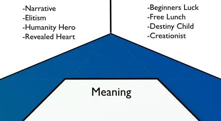
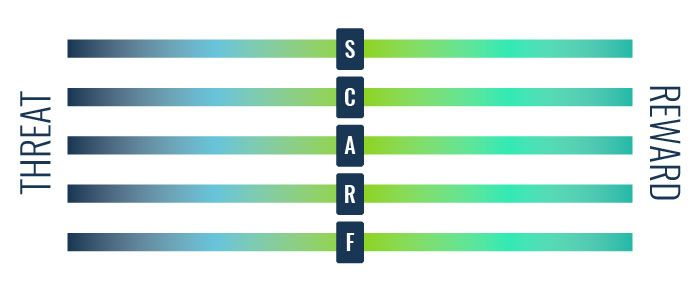

گیمیفیکیشن به معنای الهام گرفتن از دنیای بازی برای بهبود دنیای واقعی است. گیمیفیکیشن می خواهد کاری کند که همان درگیری ذهنی که در دنیای بازی ها تجربه می کنید را در دنیای واقعی نیز تجربه کنید و به این وسیله بتوانیم مشکلات دنیای واقعی را حل کنیم.
گیمیفیکیشن (Gamification) یا بازیوارسازی یعنی از ساختارهای بازی، در پدیدههایی که ماهیت غیر بازی دارند استفاده کنیم. چرا باید چنین کاری بکنیم؟ علت این کار این است که بازیها جذابیتهایی دارند که در دنیای غیر بازی آنها را پیدا نمیکنیم! وقتی شما حس کنید کاری شبیه به بازی است خودبهخود استرس شما از بین میرود و انگیزه بیشتری برای ادامهی آن کار دارید!
یکی از مهمترین ویژگیهای دنیای بازی این است که در دنیای بازی، ما معمولا حالتی را داریم که افراد ساعتها میخکوب بازی میشوند این حالت که به فارسی تچان یا غرقگی(flow) ترجمه شده است حالتی است که در آن کاربر زمان و مکان را فراموش میکند.
در بازیها ما فیدبک آنی داریم چیزی که در دنیای واقعی از آن بیبهره هستیم. اگر حوزهی فعالیت شما منابع انسانی است، یکی از مهمترین نکات دقیقا همین فیدبک آنی است که انگیزه خاص خود را دارد.
در بازی ها ما خیلی سریع متوجه میشویم که هدف از بازی کردن چیست. اما در زندگی واقعی هنوز این موضوع برای ما شفاف نیست.
در بازیها معمولا ما به دنبال یک مفهوم حماسی هستیم. ژانر خیلی از بازیها نجات دنیا و.. است اما در زندگی معمولی ما خیلی زندگی حماسی نداریم!
در بازیها، ما خیلی راحت تر معاشرت میکنیم اتفاقی که در مقایسه با زندگی منزوی واقعی قابل توجه است.
بسیار ساده تر است که به یک انسان بگوییم با من بازی کن تا اینکه از وی تقاضای کمک کنیم.
در جدول زیر به صورت خیلی خلاصه تفاوتهای دو دنیای بازی و واقعیت ذکر شده است تا متوجه شویم که چرا میخواهیم عناصر دنیای بازی را به دنیای واقعیت اضافه کنیم!
در زبان فارسی کلمات گوناگونی برای ترجمه گیمیفیکیشن به کار رفته است از جمله بازیوارسازی، بازیگونگی، بازیپردازی، بازیکاری
شاید مهمترین دلیلی که امروزه باید به بازیوارسازی اهمیت داد این است که نسل جدید مخصوصا کسانی که از سال ۱۹۹۸ به بعد به دنیا آمده اند با بازیهای دیجیتال بزرگ شده اند!
این افراد از ۴ سالگی تبلت به دست بوده اند و بازی کرده اند شعار این نسل این است که یا مرا درگیر کن یا از تو متنفر می شوم! این افراد کم کم به استقلال مالی میرسند و مشتری شما میشوند یا حتی کارمند شما میشوند. تصور کنید کارمندی را که در هر لحظه از زندگی عادت به داشتن فیدبک آنی داشته است و شما بعد از چند ماه به وی میگویید خسته نباشی!
کاربردهای گیمیفیکیشن در دنیای واقعی بسیار متنوع است در سایتهای متفاوت، میتوانید بنا بر نظرات افراد گوناگون دسته بندیهای متفاوتی ببینید. اما تقسیم بندی که به شخصه به آن علاقهمند هستم بازیوارسازی را در چهار حوزه زیر تقسیم میکنند
- گیمیفیکیشن در توسعه محصول
- گیمیفیکیشن در بازاریابی
- گیمیفیکیشن در منابع انسانی
- گیمیفیکیشن در زندگی شخصی
معنی واژه گیمیفیکیشن به فارسی، بازیوارسازی است چون کلمه Gamification، صورتِ اسمیِ فعل گِیمیفای (Gamify) و به معنای به بازی تبدیل کردن و بازی سازی است. در واقع گیمیفیکیشن با رابطه تنگاتنگی که با علوم رفتاری و دانش طراحی برای تغییر رفتار (Behavioral Design) دارد به معنایِ پیاده کردنِ تفکر و المانهای بازی در محیطهای واقعی با ماهیتِ غیر بازی است تا کارها لذت بخشتر و پربازدهتر شوند. بازیکنها هم افرادی هستند که در یک سیستمِ گیمیفای شده (به کارگیری المانهای بازی) حضور دارند و در واقع گیمیفیکیشن برای آنها طراحی شده است. مثلا کارکنان یک کارخانه که فرایند کار کردن در آن بازیوارسازی شده است.
هدف اصلی از گیمیفیکیشن تاکید بر جنبه و انگیزههای انسانی در همه فرایندها است. یعنی همه سیستمها به جای طراحی عملکرد-محور (Function-Focused Design) که هدفش کاراییِ صرف است، با طراحی انسان-محور (Human-Focused Design)، برای انگیزههای انسانی بهینه شوند. در حال حاضر بیشتر سیستمها عملکردگرا هستند یعنی متمرکز بر عملکرد بوده و به نحوی طراحی شدهاند که کارها درست و سریع انجام شوند. کارخانهای را تصور کنید که کارگرانش کارهای خود را انجام میدهند، فقط به این دلیل که مجبورند و باید این کار را بکنند. در حالیکه طراحی انسان-محور یادآوری میکند که افرادِ درونِ یک سیستم، انسان هستند و احساسات دارند. آنها میتوانند حسهای مختلفی مانند عدم امنیت، بیانگیزگی و حتی اجبار داشته باشند. بنابراین چقدر خوب میشود اگر این سیستم به کمک گیمیفیکیشن، متناسب با احساسات و انگیزههای آنها بهینه شود تا تعامل و مشارکت (Engagement) آنها هم بیشتر شود.
دلیل اینکه ما از Gamification استفاده میکنیم این است که صنعت بازی سازی اولین صنعتی بود که طراحی انسان-محور را اجرا کرد. بازیها هدف دیگری جز جلب رضایت بازیکن ندارند. البته، در اغلب بازیها هدفهایی وجود دارند مانند کشتن یک اژدها، نجات شاهزاده خانم و گاهی حتی نجات یک اژدها اما همه اینها بهانهای هستند که بازیکن را به سادگی شاد و سرگرم نگه دارند. در واقع بازیها طی دههها (یا حتی قرنها بسته به اینکه چگونه Game را معنی میکنید) یاد گرفتهاند چگونه میتوان بر انگیزه و مشارکت افراد تسلط داشت. به همین دلیل ما هم از Game میآموزیم و در سیستمهای خود از گیمیفیکیشن استفاده میکنیم تا طراحی انسان-محور داشته باشیم.
کلمه گیمیفیکیشن نخستین بار در سال 2002 توسط نیک پِلینگ (Nik Pelling)، برنامهنویس و مخترع بریتانیایی استفاده شد. به لطف فورسکوئر (Foursquare: شبکه اجتماعی برای جستجو و کشف سرویسهای اطراف) در سال 2009 به شهرت رسید. در سال 2011، وقتی گارتنر آن را به چرخه ترویج (Hype cycle) اضافه کرد، به صورت رسمی یک کلمه کلیدی شد. البته بازیوارسازی چیزی نیست که واقعا از سال 2002 شروع شده باشد. بلکه همه ما از کودکی با این موضوع آشنا بودیم. همان برچسبهایی که معلم در مدرسه به ازای هر 20 به ما میداد یا بستنی که مادرمان قولش را به ما داده بود تا بعد از اتمام تکالیف برایمان بخرد. ولی اکنون موضوع گیمیفیکیشن داغتر از همیشه است و مردم به دنبال پیادهسازی آن در تمام جهات زندگی و به خصوص کسب و کار هستند.
بازیوارسازی به صورت گسترده در حوزههای زیر و به منظور سودآوری مالی و اقتصادی، دستاوردهای اجتماعی، وفاداری مشتری، افزایش کمیت و کیفیتِ مشارکت (Engagement) و… کاربرد دارد :
- گیمیفیکیشن در بانکداری
- گیمیفیکیشن در کسب و کار
- گیمیفیکیشن در آموزش
- گیمیفیکیشن در کلاس درس
- گیمیفیکیشن در اینستاگرام و رسانههای اجتماعی
- گیمیفیکیشن در بازاریابی و تبلیغات
- گیمیفیکیشن در سلامت
- گیمیفیکیشن در پزشکی
- گیمیفیکیشن در خرده فروشی
- گیمیفیکیشن در رستوران
- گیمیفیکیشن در روانشناسی
- گیمیفیکیشن در زندگی شخصی
- گیمیفیکیشن در سازمان
- گیمیفیکیشن در فروش
- گیمیفیکیشن در گردشگری
مزیت اصلی گیمیفیکیشن، افزایش تعامل (Engagement) کاربر است. گیمیفیکیشن باعث میشود بسیاری از کارها جنبه عملی به خود بگیرند. مثلا به جای اینکه فقط در مورد یک فعالیت مطلبی بخوانند، در فرایند یادگیری آن شرکت میکنند. رقابت یکی دیگر از مزایای گیمیفیکیشن است. با گیمیفیکیشن افراد انگیزه بیشتری میگیرند که از رقبای خود بهتر عمل کنند. این باعث میشود که برای رسیدن به نتایج بهتر، تلاش بیشتری کنند. اگر دنیا اصول گیمیفیکیشن را به خوبی اتخاذ کند و بر آنچه واقعاً سرگرم کننده و انگیزه بخش است تمرکز کند، دیگر هیچ تفاوتی بین کارهایی که مردم باید انجام دهند و کارهایی که میخواهند انجام دهند وجود نخواهد داشت. تنها کاری که مردم باید انجام دهند این است که تمام روز را بازی کنند. به این ترتیب، کیفیت زندگی برای همه به طور قابل توجهی بالاتر میرود، شرکتها عملکرد بهتری خواهند داشت زیرا کارمندانشان واقعا میخواهند که کارها را انجام دهند و جامعه به طور کلی پربازدهتر خواهد شد.
فریم ورکی که نتیجه تحقیقات یوکای چو است است که با آن، می توان تکنیکهای مختلفی که یک سیستم را سرگرم کننده میکند، تحلیل کرد و برای آن استراتژی ساخت.
طبق تحقیقات یوکای چو (معروفتترین متخصص گیمیفیکیشن در جهان) تقریباً هر بازیای که سرگرم کننده است، به برخی از Core Drives (رانه یا محرک) در درون انسان مرتبط میشود که او را به سمت فعالیتهای خاصی برمیانگیزد. او 8 رانه یا محرک اصلی در وجود انسان را در یک 8 ضلعی گرد هم آورده است و معتقد است انسان هر کاری که انجام میدهد به خاطر حداقل یکی از این 8 انگیزه است. پس میتوان از آنها که نشانگر احساسات و انگیزههای انسان هستند برای تأثیر مثبت در کار و زندگی استفاده کرد.
Epic Meaning & Calling
یک میل درونی است که در آن فرد معتقد است کاری که انجام میدهد، معنا و ارزشی فراتر از خودش دارد. یا اینکه او برای انجام کاری، برگزیده و انتخاب شده است. آیا به این موضوع فکر کردهاید که در دنیای واقعی چرا بچههای کوچک و فقیر خیلی سخت کار میکنند تا به پدر و مادر خود کمک کنند؟ یا چطور افراد برای آرمانهای خود شهادت و از جان گذشتن را میپذیرند؟ چون آنها این کار را بسیار ارزشمند میدانند و به نوعی این کار معنای زندگیشان میشود. یکی از نشانههای این رانه در بازی زمانی است که بازیکن وقت زیادی از خود را برای حفظ و نگهداری از یک چیزی مثل انجمن صرف میکند یا به ایجاد چیزهایی که به نفع یک گروه یا جامعه است، کمک میکند. در داستان بازیهایی که جهان در حال نابودی است و تنها شما هستید که میتوانید آن را نجات دهید از این رانه استفاده شده است تا فرد هیجازنزده شده و انگیزه پیدا کند. همچنین ویکی پدیا یا پروژههای Open Source از بهترین مثالهایی هستند که این رانه را نشان میدهند.
وقتی رانه معنا و ندای درون را به عنوان انگیزانندهی انسانی در سیستم خود استفاده کنید، بازیکنها خودشان انتخاب میکنند که عضوی از سیستم شما بشوند و فعالیت کنند اما نه به خاطر اینکه مستقیما به نفع خودشان است بلکه به این دلیل که آنها را تبدیل به قهرمانانِ داستانِ شما میکند. اگر میخواهید این رانه را به کار گیرید باید کاری کنید که بازیکنان حس کنند بخشی از یک هدف متعالی یا برنامه بزرگ هستند و نقش مهمی را در این بین ایفا میکنند. به این ترتیب، مشارکت کنندههای فعالی خواهید داشت که همواره به تعدادشان اضافه میشود، تنها به سبب انگیزه و تعهدی که درباره هدفِ کار شما دارند.
هر کدام از رانهها تکنیکهای منحصر به فرد خود را دارند. البته برخی از تکنیکها هستند که در ایجاد چند رانه کاربرد دارند. در اینجا ما به پرکاربردترین تکنیکها برای گنجاندن Epic Meaning & Calling در سیستمتان که باعث ایجاد تعامل، انگیزه و وفاداری کاربر میشود میپردازیم:
بیشتر بازیها با یک داستان شروع میشوند که به بازیکن پیش زمینهای در مورد اینکه چرا باید بازی را انجام دهد، میدهد. بسیاری از داستانها مربوط به نجات جهان، یک شاهزاده خانم، حل یک پرونده و… است. یکی از ساده ترین راهها برای اعمال Epic Meaning & Calling در سیستم ارتباط با مشتری، استفاده از یک روایت و داستان جذاب است. داستانی که باعث شود، افراد در حین تعامل با شرکت، محصول یا وب سایت شما، فقط یک مصرف کننده نباشند بلکه درگیر معنای بالاتری شوند.
شرکت Zamzee که محصولاتش تولید لباسهای تکنولوژیک برای کودکان است، از طریق رابط نرم افزاری آنلاین خود و یک داستان فانتزی، ماموریتهای خیالی جادوگری برای کودکانی که آن لباسها را میپوشند تدارک میدید. مثل اینکه تو یک جادوگر کوچک هستی و برای اینکه اولین وِرد جادویی خود را بدانی باید 15 بار از پلهها بالا و پایین بروی. طبق آمار شرکت Zamzee بچههایی که در این مأموریتهای خیالی شرکت کردهاند 54% بیشتر از بقیه بچهها حرکت کردهاند.
اگر بتوانید یک ماموریت در مقیاس بزرگ و جهانی، اضافه کنید به پیشنهاداتی که به مشتری میدهید، فروش بسیار بیشتری خواهید داشت. برای این کار میتوانید کاری که قرار است مشتری یا مخاطبِ شما انجام دهد را به چیزی که دنیا را به مکان بهتری تبدیل میکند، متصل کنید.
یک مثال خوب از Humanity Hero برای شرکت TOM’s Shoes است. این شرکت هر بار از آن خرید میشود، یک جفت کفش هم به بچههای جهان سومی اهدا میکند. این حس که شما با خرید یک جفت کفش، به یک نیازمند در آن سوی جهان کمک کردهاید و یک کفش به او هدیه دادهاید، احساس خیلی خوبی به شما میدهد.
تکنیک الیتیسم یعنی اجازه دادن به کاربران یا مشتریان خود برای تشکیل یک گروه غرورآفرین و خاص بر اساس قومیت، عقاید یا علایق مشترک که باعث میشود آنها احساس کنند بخشی از یک هدف بزرگتر هستند. الیتیسم، یک غرور گروهی را در ذهن القا میکند به این معنی که هر یک از اعضا سعی میکند با انجام اقدامات خاصی منجر به غرور و افتخار گروه شود و آن را حفظ کنند. این گروه همچنین تلاش میکنند تا رقبای خود را ناامید کنند که باعث شود رقابت بین هر دو گروه و همچنین تلاش آنها، بیشتر شود.
حتما مسابقات بین مدرسهای یا دانشگاهی را تجربه کردهاید. در این مسابقات چون افراد احساس تعصب و غرور به مدرسه / دانشگاه خود دارند، تلاش میکنند که همیشه بهترین و غرورآفرین باشند. بازیکنان بیشتر از اینکه برای خودشان باشد، به خاطر حیثیت مدرسه یا دانشگاه است که تلاش میکنند و این همان معنای بزرگتر از خودشان است. حتی افرادی که بازیکن مسابقه نیستند هم به عنوان طرفدار پروپاقرص، از تیم حمایت کرده و برای پیروزیاش تلاش میکنند.
این تکنیک بر روی ندای درون یا همان Calling تمرکز دارد. Calling چیزی است که باعث میشود افراد فکر کنند در تقدیرشان است که یک کار خاص یا رسالتی را به انجام برسانند. یکی از تکنیک های اجرای Calling در رانه اول هم، شانس تازه کاران است. با این تکنیک، افراد فکر میکنند که یکی از معدود نفراتی هستند که شانس در خانهشان را زده و باید از این فرصت استفاده کنند. همین قرار گرفتن در بین این تعداد محدود از افراد، باعث میشود که آنها رغبت بیشتری برای انجام کار از خود نشان دهند.
اگر یک گیمر در اولین روز انجام بازی به طور تصادفی یکی از قدرتمندترین شمشیرهای بازی را بدست آورد که حتی بازیکنان باسابقه هم نمیتوانستند به راحتی آن را بدست آورند، به احتمال زیاد در بازی میماند تا حتما از آن شمشیر استفاده کند.
تکنیک نهار رایگان یعنی چیزی را که افراد باید به ازای آن هزینهای پرداخت كنند، رایگان در اختیار شخصی قرار دهید تا او احساس خاص بودن کند. این کار باعث میشود فرد بعدا، پرداختهای مربوط به آن مورد را بیشتر و با رضایت انجام دهد.
رستوران زنجیرهای برزیلی Spoleto با بیش از 200 شعبه در اسپانیا، برزیل و مکزیک از این تکنیک استفاده کرد. او در روز زن به هر بانویی که به آنها میگفت من زیبا هستم، یک نهار رایگان میداد. این امر به تبلیغ یک پیام مثبت کمک کرد و باعث شد زنان در آن روز احساس خاصی داشته باشند که احتمالاً باعث بازگرداندن آنها در روزهای دیگر نیز میشد. زیرا آن رستوران مکانی بود که احساس ویژهای به آنها دست داده بود. البته این مثال چون یک رستوران بود نهار رایگان سرو کرده بود. طبیعتا کسب و کارهای دیگر متناسب با خدمات و محصولات خود باید از این تکنیک استفاده کنند و منظور از تکنیک Free Lunch لزوما دادنِ نهار رایگان نیست.
تکنیک سرنوشت کودک - Destiny's Child
تکنیک آفرینش گرا - Creationist
تکنیک قلب نازل شده - Revealed Heart
Development & Accomplishment
رانه Development & Accomplishment سادهترین رانه برای طراحی است. در این رانه رسیدن به موفقیت انگیزهای برای پیشرفت کردن، توسعه مهارتها و در نهایت غلبه بر چالشها است. کلمه “چالش” در اینجا بسیار مهم است، چون جایزه بدون غلبه بر چالش به هیچ وجه معنیدار نیست. در این رانه بیشتر از PBL ها: امتیازها (Points)، نشانها (Badges) و جدول امتیازات یا همان لیدر بوردها (Leaderboards) استفاده میشود. برای درک بهتر، برچسبهای ستاره شکلی که مربیها در مهدکودک به خاطر نقاشیهای زیبا به بچهها میدهند را به یاد آورید. این همان استفاده از رانه دوم؛ پیشرفت و دستاورد است که باعث تشویق کودک برای جمع کردن ستارههای بیشتر میشود. خواستهای که کودک به خاطرش باید بیشتر تلاش کند و نقاشیهای زیباتری بکشد.
مغز انسان تمایل طبیعی به احساس پیشرفت، تجربه رشد و دیدن افزایش تعدادِ دستاوردهایش دارد. پس شما فقط باید موقعیتهایی ایجاد کنید که فرد حس برنده شدن پیدا کند. هر جایی هم که خبر از برنده شدن باشد، یعنی یک چالش حل شده است. در بازیها پیشرفت شما تا رسیدن به مرحله نهایی (Win Stage) به چند مرحله و چالش تقسیم شده است؛ مثل از بین بردن دشمنها در مسیر، جمع کردن سکهها و الماسها، رفتن به سطوح بالاتر و … . به این ترتیب فرد حتی قبل از رسیدن به پیروزی بزرگ (مرحله آخر)، در مراحل قبلی هم با اقدامات متوالی، احساس پیروزی و پیشرفت دائمی میکند و این همان حسی است که به او لذت و انگیزه برای ادامه میبخشد.
وضعیت امتیازات فرد را نشان میدهد. نشان دادن وضعیت امتیازات و تغییرِ آن با هر پیشرفت کوچک فرد، او را به ادامه بازی ترغیب میکند.
نشانها یا مدالها به عنوان یک نماد و سمبل هستند که پیشرفت و دستاورد را نشان میدهند و میتوانند به شکلهای مختلف مثل ستاره، کمربند، لباس فرم، کلاه مخصوص و… باشند. در دنیای واقعی مدالهای طلا، نقره و برنز در مسابقات یا مدال افتخار که به فردی اهدا میشوند، Badge هستند.
در لیدربورد بازیکنان بر اساس امتیاز و موقعیت خود در بازی، رتبهبندی میشوند. جدول نتایج بازیکنان را به ادامه بازی ترغیب میکند چون بالاتر رفتن در جدول نتایج، میتواند ایجاد انگیزه کند. ما به طور ذاتی رقابت را دوست داریم. جدول نتایج راه مناسبی برای بازیکنان ایجاد میکند تا نتایج و پیشرفتشان را به رخ دیگران بکشند.
البته جدول نتایج نباید هیچ وقت باعث دلسردی بازیکنان شود. یک راه برای جلوگیری از دلسرد شدن بازیکنان ضعیفتر، بروز رسانی نتایج، به صورت مرتب است. به این صورت که جدول نتایج به صورت روزانه یا هفتگی یا هر زمانِ مشخص دیگر، ریسِت شود. این کار باعث میشود بازیکنان شانس شروع دوباره را داشته باشند و فکر نکنند آنقدر از دیگران عقب هستند که دیگر امکان برنده شدن ندارند. اگر بازیکن حس کند شانسی برای پیروز شدن ندارد، دست از تلاش بر میدارد.
اوری آدمُن گفته: «جدول نتایج، کاربران را به چالش میکشد تا فعالتر باشند. برای اینکه کاربران بیشتری انگیزه پیدا کنند، پیشنهاد میکنیم از جدول نتایج، برای نشان دادن کاربران برتر به مدت محدود، یا کاربران برتر در بخشهای خاص استفاده کنید.»
نمایش دادن میزان پیشرفت کاربر، او را به ادامه فعالیتش تشویق میکند. دکتر برد مایرز از دانشگاه تورنتو اعلام کرده که ما انسانها ترجیح میدهیم هدف مشخصی داشته باشیم و همچنین فاصلهمان با هدف نهایی را هم با یک نشانگرِ پیشرفت ببینیم. در واقع دیدن پیشرفت و اطلاع داشتن فاصله از هدف، میل به ادامه دادن را در ما افزایش میدهد.
شبکه اجتماعی لینکدین (LinkedIn) استاد استفاده از نوار پیشرفت است! نشان دادن میزان تکمیل پروفایل به صورت درصدی، باعث میشود کاربران برای رسیدن به 100 درصد، تلاش کنند. آنها با یک جمله نیز توانستند کاربران را به تکمیل پروفایلشان تشویق کنند: «کاربرانی که پروفایلی با اطلاعات کامل دارند، 40 برابر بیشتر امکان دیده شدن در لینکدین دارند.»
تکنیک لیست های تلاش - Quest Lists
تکنیک دسر واحه - Dessert Oasis
تکنیک بزن قدش - High Five
تکنیک تاج گذاری - Crowning
تکنیک رژه انتظار - Anticipation Parade
تکنیک اثر هاله - Aura Effect
تکنیک آموزش پوشش گام به گام - Step-By-Step Overlay Tutorial
تکنیک رئیس مبارزه - Boss Fight
تکنیک جوایز اقدام ثابت (ناهار به دست آمده) -Fixed Action Rewards (Earned Lunch)
Empowerment of Creativity & Feedback
رانه بروز خلاقیت و بازخورد گرفتن، زمانی است که کاربران درگیر یک فرایند خلاقانه میشوند. انسانها نه تنها به روشهایی برای ابراز خلاقیت خود نیاز دارند، بلکه باید بتوانند نتایج کار خود را ببینند و در موردش بازخورد بگیرند. فرایندهایی که در آن، افراد به طور مکرر مسائل را کشف میکنند و ترکیبات مختلف را امتحان میکنند در ارتباط با این رانه است. به همین دلیل بازی با لِگوها (Lego) یا همان خانهسازی و نقاشی به خودی خود سرگرم کننده هستند و اغلب به Evergreen Mechanics معروفند، یعنی دیگر نیاز نیست طراحِ بازی به طور مداوم، محتوای بیشتری به بازی اضافه کند تا تازه و جذاب باشد.
یکی از موفقترین تکنیکهای بازی Milestone Unlock است. وقتی افراد بازی میکنند، اغلب یک نقطه و زمان مشخصی را در ذهن خود برای توقف بازی تعیین میکنند مثلا میگویند “این آدم را هم در این مرحله بزنم و بعد تمام. ” یا “من نزدیک به سطح (level) بعدی هستم، به سطح بعدی که رفتم، دیگر بازی کردن را متوقف میکنم.” کاری که Milestone Unlock انجام میدهد این است که امکان مهیجی را دقیقا بعد از آن نقطهای که فرد تعیین کرده است، قرار میدهد که پیش از این وجود نداشت.
از Milestone Unlock در برخی RPG ها (بازیهای نقش آفرینی Role Playing Games) استفاده میشود. در این بازیها هر زمان که به یک سطح بالاتر برسید، مجموعه جدیدی از مهارتها را یاد میگیرید. مهارتهایی که بسیار جذاب هستند و به شما کمک میکنند تا دشمنها را متفاوتتر و سادهتر از قبل بکشید. هنگامی که بازیکنان به سطح بعد رسیدند (“نقطهی توقف بازی”)، ناخودآگاه میخواهند ببینند که این مهارتهای جدید چگونه هستند. کمی آنها را امتحان میکنند، آنها را در مورد دشمنان قویتر آزمایش میکنند، از قدرتمند بودنشان لذت میبرند و سپس متوجه میشوند که نه تنها این Level را هم بازی کردهاند، بلکه حتی به Level بعدی (نقطه توقف بعدی) هم نزدیک شدهاند. اینجاست که بازیکن میبیند ساعت 5 صبح است در حالیکه او قصد داشت ساعت 11 شب از بازی دست بکشد!!
بوسترها در بازی چیزهایی هستند که شما با به دست آوردنشان، میتوانید سریعتر به نقطه پایانی و بُرد برسید. البته این بوسترها که تقویت کننده به حساب میآیند، ظرفیت محدودی خواهند داشت و دائمی نیستند. این تقویت کنندهها فقط در موقعیتهای خاصی ظاهر میشوند و با به دست آوردن یک مهارت جدید متفاوتند. داشتن بوستر به افراد اجازه عملکردهای متفاوت از حالت عادی خود میدهد مثلا سرعت آنها را به یکباره زیاد میکند. به همین دلیل، آنها به وجد آمده و از این حرکت جدید خوشحال میشوند. به عنوان مثال: گرفتنِ ستاره Jump در بازی سوپر ماریو.
فراتر از تکنیکهایی که به افراد اجازه میدهند احساس قدرت کنند (مثل تکنیک قبلی)، مواردی هم وجود دارند که واقعاً معنیدار هستند و ترجیحاتی را نشان میدهند که لزوما بهتر از بقیه نیستند. این تکنیکها را یوکای چو، Plant Pickers نامیده زیرا دقیقاً مانند تصمیمگیری در مورد نحوه کاشت محصول در باغ است که اغلب بر اساس سبک، استراتژی و خلاقیت است. همان چیزی که به رانه سوم دامن میزند.
مطالعات نشان میدهند که افراد دوست دارند حق انتخاب داشته باشند. مثلا ترجیح میدهند به جای داشتن فقط یک گزینه (حتی عالی)، دو گزینه برای انتخاب داشته باشند. نکته کلیدی در درک این موضوع این است که خود انتخاب لزوماً معنادار نیست، بلکه صرفاً باعث میشود فرد احساس کند که اختیارِ انتخاب کردن دارد.
تکنیک کنترل زمان واقعی - Real-Time Control
تکنیک ترکیب های همیشه سبز - Evergreen Combos
تکنیک بازخورد فوری - Instant Feedback
تکنیک پرهای خالی - Blank Fills
Ownership & Possession
این محرک، انگیزه کاربران برای فعالیت است چون احساس میکنند مالک چیزی هستند. هنگامی که یک بازیکن احساس مالکیت میکند، به ذات میخواهد آنچه را که مالکش است بهتر کند، حفاظت کند و همچنین مقدار بیشتری از آن را تصاحب کند. بازی مونوپولی بهترین مثال برای استفاده از این رانه است. این امر علاوه بر اینکه عامل اصلی تمایل به جمع آوری ثروت است، با بسیاری از وسایل غیر واقعی (Virtual Goods) یا پولهای مجازی در سیستمها سروکار دارد یعنی سکههایی که فرد در داخل بازی جمع میکند واقعا به او احساس خوبی میدهند. حتی اگر با آنها در دنیای واقعی نتواند چیزی بخرد. همچنین، اگر شخصی وقت زیادی را صرف سفارشی کردن پروفایل یا آواتار خود کند، به طور خودکار نیز نسبت به آن احساس مالکیت و تعلق بیشتری میکند. در ضمن این همان رانه است که باعث میشود جمع آوری تمبرها یا قطعات پازل، برای افراد سرگرم کننده باشد.

در این تکنیک، امتیازات شما برای به دست آوردن سایر اشیای با ارزش، قابل معامله است. یعنی کاربران میتوانند از امتیازات خود به صورت استراتژیک استفاده کنند و با مدیریت منابع خود سعی کنند اشیای باارزش دیگری به دست آوردند.
هنگامی که شما یک محصول یا خدمت ارائه میدهید، اغلب خوب است که از همان ابتدا در کاربران خود احساس مالکیت و تعلق ایجاد کنید. مثلا به جای اینکه یک خانه مبله کامل به کاربر بدهید، این امکان را به او بدهید که خودش تخت و … را انتخاب کرده و در خانه بچیند. انتخاب رنگ و مدل مو برای آواتار و پروفایل هم همین است. وقتی افراد چیزی را خودشان از اول میسازند علاقه بیشتری به آن نشان میدهند و آن را برای خود میدانند.
یکی از قدرتمندترین و موثرترین روشها برای استفاده از Ownership & Possession، تکنیک مجموعهداری یا کلکسیون داشتن است. اگر شما چند مورد نشان یا وسیله خاص به بازیکن بدهید و به او بگویید که اینها فقط چند تعداد از یک مجموعه کامل هستند، این تمایل در آنها به وجود میآید که همه آن مجموعه را جمعآوری کنند تا یک کلکسیون کامل از آن داشته باشند.
اثر آلفرد زمانی است که کاربران احساس میکنند کالا یا خدمتی چنان متناسب با نیازهای خودشان شخصی سازی شده است که اصلا نمیتوانند به سرویس دیگری فکر کنند. در واقع افراد بسیار میپسندند که تجربیات اختصاصی داشته باشند. در بازی هم به کمک بیگ دیتا و یادگیری ماشین، میتوان کاری کرد که سیستم از عملکرد و رفتارهای قبلی بازیکن یاد بگیرد و شرایط را متناسب با خصوصیتهای او پیش ببرد.
در این حالت، افراد با چیزی که از آن نگهداری کردهاند، ارتباط برقرار میکنند. یک بازی را در نظر بگیرید که در آن باید از یک مزرعه در برابر آفتها یا مهاجمان محافظت کنید. بعد از این که موفق شدید، از آنجایی که ذهن میخواهد رفتارهای شما را (ساخت مزرعه و محافظت از آن) منطقی جلوه دهد، شما یک ارتباط و احساس با مزرعه خود برقرار میکنید تا زمانی که صرف کردهاید، برایتان بیمعنی نباشد.
داراییهای مجازی در رانههای 2 و 4 هم هستند. کاربرد Virtual Goods در رانه 8 این است که اگر فرد بازی را ادامه ندهد، نمیتواند داراییهای بیشتری را کسب کرده و تجربه کند.
تکنیک آواتار - Avatar
تکنیک بار استخدام کننده - Recruiter Burden
تکنیک پیوست مانیتور - Monitor Attachment
Social Influence & Relatedness
رانه Social Influence & Relatedness شامل تمام عناصر اجتماعی است که افراد را به حرکت در میآورد مثل: راهنمایی کردن بقیه، مورد پذیرش و تایید قرار گرفتن از طرف جامعه، بازخوردهای اجتماعی گرفتن، همراهی کردن و همچنین رقابت و حسادت. وقتی دوستی را میبینید که در مهارت خاصی شگفت انگیز است یا چیز خارق العادهای دارد، شما هم برای رسیدن به آن سطح، انگیزه پیدا میکنید. همچنین رانه Social Influence & Relatedness باعث میشود شما به سمت افراد، مکانها یا رویدادهایی که خود را با آنها مرتبط میدانید، کشیده شوید. اگر محصولی مشاهده میکنید که دوران کودکی شما را یادآوری میکند احتمالا حس نوستالژی شما باعث خرید آن محصول میشود. این روزها بسیاری از شرکتها اولویت زیادی برای بهینهسازی استراتژیهای روابط اجتماعی خود در فضای آنلاین، قائل هستند.
Social Treasures یا گنجینههای اجتماعی هدایایی هستند که فقط میتوانند توسط بازیکنان به هم اهدا شوند. مثلا در بازی Farmville برخی وسایل مجازی وجود داشتند که فقط اگر یک بازیکن دیگر، روی دکمه Give to Friend میزد، آن هدیه به فرد دیگر داده میشد. این کار باعث میشود که اگر کسی چنین چیزی را بخواهد اول خودش آن را به کس دیگر هدیه دهد و به این ترتیب، طرف مقابل هم به او هدیه میدهد. به این ترتیب روابط خوبی در داخل بازی شکل میگیرد. در ضمن این اتفاق باعث میشود افراد دوستان بیشتری را به این بازی دعوت کنند.
در بازی مشارکتی و همچنین بازاریابی ویروسی بسیار موثر است. زیرا قبل از اینکه هر فردی به بُرد (Win-State) برسد، به مشارکت گروهی نیاز دارد. در بسیارهای از بازیها مراحلی وجود دارد که به قدری چالش برانگیز هستند که به یک تیم کامل متشکل از 40 بازیکن با Level بالا نیاز دارد تا با هم کار کنند و پیروز شوند.
با این تکنیک فرد به طور ضمنی و بدون جار زدن، موفقیتهای خود را به مردم نشان میدهد. مثلا اگر شما وارد دفتر کار یک شخص شوید و جوایز و لوح تقدیرهای او را ببینید، متوجه حرفهای بودن و موفقیتهای او میشود و دیگر نیازی نیست که خود شخص آنها را بیان کند. در بازی هم نشانها و سطح آواتارها همین کار را میکنند.
Brag به معنی جار زدن است. از آنجایی که انسان دوست دارد بقیه از موفقیتهایش باخبر شوند، شما با تکنیک Brag Buttons این امکان را به بازیکن میدهید که بتواند موفقیت و دستاورد هایش را بین همه جار بزند مثل Share کردن نتیجه بازی و امتیازات خود با دیگران در شبکههای اجتماعی. وقتی هم که او موفقیت خود را با دیگران به اشتراک گذاشت، بازیکنان جدید به بازی اضافه میشوند. هم به دلیل اینکه با بازی آشنا میشوند و هم چون میخواهند با فرد مورد نظر، رقابت کنند.
در فرهنگ اداری امریکا، فضاهایی مثل جلوی آب سرد کن وجود دارد که افراد بریکها و استراحتهای کوتاهی در مقابلش دارند و در آن هنگام با دیگر همکاران گپ کوتاهی که خارج از موضوعات کاری دارند. این کار ارتباط کارمندان با هم را تقویت میکند و مثل فروم در سایتها است. در بازیها هم گروههایی که افراد میتوانند ایجاد کنند، مثال خوبی از برقرای ارتباط در خارج از فضای جدی بازی است.
حضور منتور (مربی) در هر محیط فعالیتی که به انگیزه پایدار نیاز دارد، مفید است. وجود مربی در یک مسیر هم انگیزه شخص را برای پیمودن راه بالا نگه میدارد، هم او را در مسیر راهنمایی میکند و هم با دریافت پشتیبانیِ احساسی، پیمودن راه را برای او آسان میکند. این تکنیک برای حفظ بازیکنان کهنه کار و باسابقهای است که به مرحله آخر بازی (Endgame Phase) رسیدهاند.
Social Prods همان لایکها یا کف زدنهایی هستند که در شبکههای اجتماعی وجود دارند. در واقع برخی رفتارها که مخصوص به آن شبکه اجتماعی هستند مثل آیتم Poked که در فیسبوک است. مزیت Social Prod این است که کاربر نیاز نیست خیلی برای بیان چیزهای شوخ طبعانه یا برقراری ارتباط وقت بگذارد. همچنین نگران نیست که کارش احمقانه به نظر برسد، بلکه به راحتی و با فشار یک دکمه، تعامل برقرار میشود.
تکنیک دوست شدن - Friending
تکنیک برآمدگی اره - Seesaw Bump
تکنیک لنگرهای انطباق - Conformity Anchors
Scarcity & Impatience
انسان به طور طبیعی میخواهد چیزهایی که ندارد یا در دسترسش نیست، داشته باشد. اگر یک ظرف پر از انگور روی میز باشد، ممکن است برای شما اهمیتی نداشته باشد. اما اگر آن را جایی دور از دسترس شما مثلا بالای یک قفسه بلند بگذارند، شما دائما در فکر انگور خواهید بود: “آیا شیرین است؟ آیا میتوانم آن را داشته باشم؟ چه موقع میتوانم آن را داشته باشم؟ ” این انگیزهی خواستنِ چیزی است که نمیتوانید داشته باشید. بسیاری از بازیها دارای Appointment Dynamics هستند. مثلا 2 ساعت بعد برگردید تا پاداش خود را دریافت کنید و این واقعیت که اکنون نمیتوانید یک چیز خاص را بدست آورید باعث میشود در طول روز به آن فکر کنید.
گیمیفیکیشن فیسبوک از نوع Scarcity & Impatience است. محدودیت و بیصبری رانهای است که فیسبوک هنگام شروع کار، از آن استفاده کرد. فیسبوک در ابتدا فقط برای دانشگاه هاروارد باز بود. سپس به چند مدرسه معتبر دیگر و در نهایت همه کالجها راه یافت. وقتی سرانجام به روی همه باز شد، بسیاری از مردم میخواستند در آن عضو شوند تنها به این دلیل که قبلاً نمیتوانستند واردش شوند.
یکی دیگر از فرمهای ایجاد Scarcity، محدودیت در زمان است و معروفترین تکنیک بازی برای ایجاد محدودیت هم تکنیک Appointment Dynamics است. یعنی دسترسی به چیزی یا توانایی انجام یک فعالیت فقط در یک تایم مشخص و محدودی امکان داشته باشد.
به عنوان مثال، یک فروشگاه کرهای برای اینکه فروش خود را در ساعت نهار و وسط روز افزایش دهد، یک مجسمه مقابل فروشگاه قرار داد. وقتی که در ساعت مشخصی از روز نور خورشید به آن مجسمه میتابید سایه یک QR Code در داخلش ایجاد میشود. یک کد که فقط از ساعت 12 تا 1 ظهر روی زمین بود و هر روز هم با اسکن کردن، چیز مختلفی را به افراد نشان میداد. به همین دلیل افراد جذبش میشدند.
اگر میخواهید انجام رفتار خاصی را افزایش دهید، یکی از بهترین استراتژیهای رفتاری، محدود کردن آن است چون فرد را بیشتر برای انجامش حریص میکند. البته محدودیت نباید در حدی باشد که متریکها اصلی آن اقدام از بین برود. در واقع وقتی فرد احساس فراوانی و در دسترس بودنِ همه چیز کند اقدامی در جهت به دست آوردن آن انجام نمیدهد. به همین دلیل بهتر است حتی اگر فرد اقدام مورد نظر ما را انجام داد مثلا پرداخت مقدار زیادی پول، باز هم با اهداف جدیدی که فرد به آنها نرسیده، احساس کمبود ایجاد شود، تا همواره همه افراد در سیستم برای دستیابی به هدفهای دیگر تلاش کنند.
فرضا اگر شما یک ویژگی به وب سایت یا بازی خود اضافه کنید که افراد فقط 3 بار در روز حق استفاده از آن را داشته باشند، در مقایسه با حالتی که آن را نامحدود کردهاید، میزان استفاده از آن ویژگی بسیار افزایش مییابد. چون افراد دوست دارند از همه حق و فرصتهایشان استفاده کنند.
بی صبری یکی دیگر از وجوه رانه ۶ است که باعث میشود فرد نتواند سریع یک کار را انجام دهد. تکنیک Torture Break یک وقفه ناگهانی برای انجام کاری است که بازیکن دوست دارد و برخلاف تکنیک قبلی که زمانش مشخص بود، زمانِ این تکنیک ناگهانی است.
با اینکه ویدیو گیمهای قدیمی تلاش میکردند بازیکن را تا جایی که میشود به طور مداوم و پیوسته مثلا 5 ساعت بی وقفه و پشت سر هم پای کنسول بازی نگه دارند. اما بازیهای موبایلی کنونی روشی دقیقا برعکس را پیش گرفتهاند. مثلا بعد از 30 دقیقه بازی به بازیکن میگویند Stop! دیگر نمی توانی بازی کنی و باید 8 ساعت بعد برگردی تا مثلا انرژی شما دوباره شارژ شود یا محصولتان برداشت شود و… . والدینی که از رانه 6 بیخبرند فکر میکنند این یک بازی خوب برای فرزندشان است، در حالیکه ذهن بازیکن همواره درگیر بازی میماند.
Last Mile Drive به کاربران نشان میدهد که آنها به هدف نهایی بسیار نزدیک هستند و نباید از ادامه دادن دست بکشند. این تکنیک به تقویت انگیزه آنها برای تکمیل هدف کمک میکند و برای نشان دادنش هم میتوانید از نوارهای پیشرفت Progress Bar کمک بگیرید. تا به اینجای مقاله با تمام بخشهای فریم ورک گیمیفیکیشن اکتالیسیس، به صورت جزء به جزء آشنا شدید. در ادامه قرار است کمی کلانتر و از بالا به فریم ورک نگاه کنیم تا بدانید چطور باید از رانهها استفاده کنید و کدام تکنیکها را برای طراحی گیمیفیکیشن سیستم خود به کار ببرید.
تکنیک آویزان - Dangling
تکنیک سرعت جایزه - Prize Pacing
تکنیک گزینه های سرعت - Options Pacing
تکنیک تایمر شمارش معکوس - Countdown Timer
تکنیک خندق - Moats
تکنیک سوختگی بزرگ - The Big Burn
Unpredictability & Curiosity
رانه هفتم از آنجایی نشات میگیرد که انسان همواره میخواهد بفهمد بعدا چه اتفاقی خواهد افتاد؟ این رانه تمایل انسان به تجربیاتی است که نتیجهاش نامشخص بوده و به شانس ربط دارد. بسیاری از مردم به همین دلیل فیلم تماشا میکنند یا رمان میخوانند. با این حال، این انگیزه همچنین عامل اصلی اعتیاد به قمار است. همچنین، هرگاه شرکتی برنامه قرعه کشی و لاتاری را برای جذب کاربران اجرا میکند، از این رانه استفاده کرده است.
بیشتر بازیکنان قبل از شروع بازی، از خواندن یک کتابچه راهنمای عظیم یا تماشای یک فیلم طولانی لذت نمیبرند. بلکه ترجیح میدهند که این آموزشها را Skip یا رد کنند و خودشان آنها را آزمایش کنند. این همان جایی است که تکنیک Glowing Choice وارد عمل میشود. در بسیاری از بازیهای نقش آفرینی (Role Playing Games)، هنگامی که بازیکن مطمئن نیست که اقدام بعدی چه چیزی است، یک شخصیت خاص کامپیوتری یا یک علامت تعجبِ درخشان، در بازی برجسته میشود تا توجه بازیکن را به خود جلب کرده و برای اقدام بعد راهنماییش کند. این کاراکتر سیستم یا علامت تعجب، سرنخ بعدی را به او نشان میدهد تا فرد بازی را یاد بگیرد.
یکی از بهترین تکنیکها برای به کارگیری رانه 7 استفاده از جایزههای نامعلوم، به جای جایزههای ثابت و از قبل مشخص شده است. هم خود جایزه میتواند نامشخص باشد و هم راهی که جایزه به فرد داده میشود و همچنین جایزههای رندوم هیجان انگیز و غیر قابل پیش بینی هستند.
هم مانند تکنیک قبلی، جایزههای نامعلوم به بازیکن میدهد اما با این تفاوت که در تکنیک قبلی، شخص جایزه را بر اساس یک اقدام مشخص دریافت میکرد اما در تکنیک فعلی، اقدام هم نامشخص است و در واقع هدیه کاملا سورپرایز و ناگهانی است.
ایده اصلی تکنیک Rolling Rewards / Lottery این قانون است که حتما باید شخصی در هر دوره برنده شود. بنابراین تا زمانی که “به مدت کافی در بازی بمانید” احتمال پیروزی شما به صورت خطی افزایش مییابد. در ضمن ذهن انسان به شکلی فکر میکند که اغلب، شرکت در یک قرعه کشی چند صد نفری و چند میلیون نفری را یکی میداند. در واقع انسان در هر 2 حالت، این قرعهکشیها را یک شانسِ هر چند کوچک میبیند و اصلا محاسبه نمیکند که چقدر احتمال برنده شدنش میتواند پایین باشد. به همین دلیل شرکت میکند!!
برای بازیهای بلندمدت بهتر است از این تکنیک استفاده کنید. با این تکنیک رابط کاربریِ بازی رفته رفته کامل میشود. اگر این کار انجام نشود محیط بازی برای بازیکنی که در مرحله اول و یادگیریِ بازی است خیلی پیچیده به نظر میرسد در حالیکه برای بازیکن در مرحله نهایی، خیلی ساده است.
تکنیک ماموریت های کوچک - Mini Quests
تکنیک داستان گویی مجازی - Virtual Storytelling
تکنیک جوایز تصادفی - Random Rewards
تکنیک شگفتی آشکار - Obvious Wonder
تکنیک پاداش های ناگهانی - Sudden Rewards
تکنیک اثر اوراکل - Oracle Effect
Loss & Avoidance
این محرک اصلی، بر مبنای جلوگیری از اتفاقات منفی و پشیمانی، ترس از دست دادن چیزی یا بروز اتفاقات نامطلوب ایجاد میشود. مثلا در مقیاس کوچک، جلوگیری از بیکار شدن و از دست دادن شغل و در مقیاس بزرگتر، جلوگیری از اعتراف به این که هر کاری انجام دادهاید بی فایده بوده و وقت خداحافظی است. همچنین، فرصتهایی که احتمال دارد زود از بین روند از این رانه استفاده میکنند. زیرا افراد احساس میکنند اگر بلافاصله اقدام نکنند، یک فرصت خوب را برای همیشه از دست میدهند.
مثال استفاده از رانه هشتم در بازی
یک مفهوم متداول در بسیاری از بازیهای محبوب، زنده ماندن برای صعود به مرحله بعدی است. بسته به نوع طراحی بازی؛ مردن یا صدمه زدن به کاراکتر شما به این معنی است که مجبورید از اول شروع کنید یا چیز قابل توجهی را از دست بدهید اعم از سکه، پول، تعداد فرصتهای باقی ماندن در بازی یا شکستهایی که رسیدن به مرحله نهایی Win-State را دشوار میکنند.
بعضی اوقات، فرد از بازی خسته شده و میخواهد از آن خارج شود. اما ترک بازی به او احساس اتلاف وقتِ خود در طی روزها یا حتی ماهها که بازی کرده است میدهد. او با خود فکر میکند “اگر قرار است خارج شوم و بازی را در این مرحله رها کنم اصلا چرا شروعش کردم؟ پس تمام امتیازات و نشانهایی که گرفتم چه میشود؟” در این مرحله برای اینکه فرد را باز هم در بازی نگهدارید باید او را به جمع کردنِ بیشتر امتیازات و نشانها سوق دهید تا دارایهای در حال افزایش اش مانع خروج او از بازی شود. البته این تکنیک چون احساس بد را از یاد بازیکن نمیبرد خیلی توصیه نمیشود. مگر زمانی که رقبای شما تکنیکی به کار بستهاند که منجر به خروج فوری بازیکن از سیستم شما میشود. فقط در این حالت از تکنیک The Sunk Cost Prison استفاده کنید.
با این تکنیک شما کاری میکنید که بازیکن باور کند چیزی متعلق به او است و اگر او یک اقدام خاص را انجام ندهد، آن چیز را از دست خواهد داد. وب سایتی را تجسم کنید که فرد با کلیک در بخشهای مختلف آن، یک پیام پاپ آپ (pop-up) کوتاه میبیند “عالیه! با این کار 500 امتیاز گرفتی” و سپس فرد چند جای دیگر هم کلیک میکند و همینطور که صفحات مختلف وب سایت را میبیند این پیام هم ظاهر میشود که “الان امتیازت شد 3000” و در نهایت وقتی فرد وارد صفحه لندینگ پیج مورد نظر شما میشود، پیامی با این عنوان میبیند: “شما الان 3000 اعتبار داری. ثبت نام کن (Sign-up) تا امتیازهای خودتو برای بعد ذخیره کنی! ” به این ترتیب فرد برای استفاده از امتیازاتش هم که شده و با فکر به آینده که شاید این امتیازات به دردش بخوره، ثبت نام میکند!
این تکنیک موقعیتی را برای کاربر فراهم میکند که اگر فورا یک اقدام خاص را انجام ندهد، فرصت را از دست خواهد داد. مثلا کشتن یک هیولای خاص که وقتی در بازی ظاهر شد شما فقط چند دقیقه فرصت دارید که با کشتن او یک امتیاز خیلی بالا دریافت کنید. اگر این کار را در همان دقایق اول انجام ندهید او ناپدید شده و فرصت گرفتن امتیاز زیاد هم از دست میرود.
بعضی مواقع است که افراد تنبلی میکنند و نمیخواهند یک رفتار را تغییر دهند یا کاری را انجام دهند. مثلا میدانند که یک محصول خیلی به دردشان میخورد اما نمیروند که آن را بخرند. در واقع آنها انگیزه لازم برای انجام آن کار را ندارند. یک طراح با تجربه باید بتواند در مرحله آخرِ تعامل با محصول، فعالیتهای بسیار جذابی طراحی کند تا انجام آن اقدام، برای فرد تبدیل به یک عادت شود.
در زندگی، ما نه تنها میترسیم چیزی که داریم از دست بدهیم، بلکه حتی ترسِ از دست دادنِ آنچه که میتوانستیم داشته باشیم را هم داریم. بله! ترس از اینکه مبادا بعدا حسرت بخوریم و پشیمان شویم. وقتی استیو جابز میخواست جان اسکالی (John Sculley)، مدیر پپسی را به عنوان مدیر عامل جدید در اپل استخدام کند برای متقاعد کردنش به او گفت: “آیا میخواهید بقیه عمر خود را صرف فروش آب قند کنید، یا میخواهید فرصتی برای تغییر جهان داشته باشید؟” این تکنیک به قدری قوی است که حتی میتواند مساله ای که فرد تنبلی میکرد و آن اقدام آخر را انجام نمیداد را هم حل کند.
تکنیک از دست دادن پیشرفت - Progress Loss
تکنیک نامه قرمز - Scarlet Letter
تکنیک گور بصری - Visual Grave
درون Octalysis رانههای سمت راست، مربوط به سمت راست مغز هستند که بیشتر به خلاقیت، اظهار خود و جنبههای اجتماعی مربوط میشوند. رانههای سمت چپ این فریم ورک هم مربوط به نیم کره سمت چپ مغز هستند، که بیشتر با منطق، محاسبات و مالکیت ارتباط دارند.
البته تقسیمبندی رانهها به نیم کره راست و چپ مغز، علمی تلقی نمیشوند و یوکای چو صرفاً و به طور نمادین این نامگذاری عاطفی و منطقی را انجام داده تا درک چارچوب و به خاطر سپاری آن را آسانتر کند.
رانههای سمت چپ مغز چه ویژگی دارند؟
رانههای نیم کره چپ مغز، انگیزههای بیرونی هستند. یعنی انگیزه شما برای اقدام یا بروز یک رفتار خاص، این است که میخواهید چیزی را بدست آورید. خواه یک هدف باشد یا یک کالا یا هر چیزی که نمیتوانید بدست آورید.
رانههای سمت چپ مغز چه ویژگی دارند؟
رانههای نیم کره راست مغز یک انگیزه ذاتی هستند. شما برای استفاده از خلاقیت، وقت گذرانی با دوستان به پاداشی نیازی ندارید چون این فعالیت خودش در حکم پاداش است.
بهتر است از کدام رانهها استفاده کنید؟
بسیاری از شرکتها قصد دارند گیمیفیکیشن را بر اساس انگیزههای بیرونی طراحی کنند. مثلا پاداش دادن به کاربران و… . با این حال، بسیاری از مطالعات نشان دادهاند که به محض توقف انگیزه خارجی، (مثلا پاداش ندادن) انگیزه کاربر حتی بسیار کمتر از قبل، یعنی پیش از موقعی که انگیزه خارجی نبود، میشود. چون در آنها انتظار دریافت جایزه ایجاد کردهاند و با نبود جایزه، دیگر آن اقدام خاص را کمتر انجام میدهند.
پس برای شرکتها بسیار بهتر است که تجربیاتی را ایجاد کنند که انگیزههای نیم کره راست مغز را بیدار کند و چیزی ایجاد کنند که خود به خود سرگرم کننده و جایزه باشد تا کاربران به طور مداوم درگیر آن فعالیت شوند.
یکی دیگر از عناصر قابل توجه در فریم ورک Octalysis این است که رانههای بالای هشت ضلعی، انگیزانندههای بسیار مثبتی در نظر گرفته میشوند، در حالی که رانههای پایین هشت ضلعی، انگیزانندههای منفی هستند.
گیمیفیکیشن White Hat چیست؟
به تکنیکهایی که از رانههای بالای هشت ضلعی استفاده میکنند “White Hat Gamification” گفته میشود. اگر چیزی به این دلیل برای شما جذاب باشد که به شما امکان میدهد خلاقیت خود را بروز دهید یا از طریق تسلط بر مهارتی به شما احساس موفقیت میدهد، باعث میشود احساس بسیار خوب و قدرتمندی داشته باشید.
گیمیفیکیشن Black Hat چیست؟
به تکنیکهایی که از رانههای پایین هشت ضلعی استفاده میکنند “Black Hat Gamification” گفته میشود. اگر یک کاری را انجام میدهید چون نمیدانید قرار است بعدش چه اتفاقی بیافتد، یا دائماً ترسِ از دست دادن چیزی را دارید، حتی اگر انگیزه بالایی هم برای انجام آن کار داشته باشید، شاید حس بدی به شما دست بدهد. به همین دلیل مشکل بازیهایی که طبق چارچوب Octalysis از تکنیکهای بازی Black Hat استفاده میکنند این است که شاید باعث افزایش درآمد شوند، اما احساس خوبی به کاربران نمیدهد.
یک نکته بسیار بسیار مهم:
بخاطر بسپارید که کلاه سیاه بودن همیشه به معنای بدِ آن نیست. این رانهها فقط محرک هستند و می توانند برای نتایج سازنده هم استفاده شوند. بسیاری از افراد با استفاده از Black Hat Gamification کاری میکنند تا هر روز بیشتر به باشگاه بروند، غذای سالم بخورند یا هر روز از زدن دکمه چرت زدن بیشتر (Snooze) در آلارم گوشی جلوگیری کنند.
یک متخصص Gamification خوب باید استفاده از هر 8 رانه را در یک فعالیت مثبت که نتیجهاش شادی و سلامتی بیشتر است استفاده کند.
برای اینکه سیستم خود را از نظر گیمیفیکیشن تحلیل کنید و ببینید که در کدام رانهها قوی یا ضعیف است، میتوانید از ابزار اکتالیسیس (Octalysis Tool) استفاده کنید. در هر رانه تکنیکهایی که استفاده کردهاید را در ضلع مربوطه بنویسید. سپس با توجه به قدرت این تکنیکها، دادههای به دست آمده، رفتار و تجربه کاربران و… امتیازی بین 0 – 10 به هر رانه بدهید. امتیازها را از زبانههای سمت چپ این صفحه میتوانید وارد کنید.
در نهایت امتیاز نهایی فریم ورک اکتالیسیس شما مشخص میشود که مثلا جهتگیری آن بیشتر به سمت گیمیفیکیشن Black Hat بوده یا White Hat. این تحلیلها به شما کمک میکنند تا کمپینهای گیمیفیکیشن خود را بهتر جهت دهی کنید.
نکته بسیار بسیار مهم دیگر:
به خاطر داشته باشید که یک سیستم گیمیفای شدهی خوب نیازی به داشتن تمام رانهها ندارد. یعنی قرار نیست که 8 ضلعی شما به طور متعادل باشد. بلکه باید بنا به هدفی که دارید، از رانهها و تکنیکها استفاده کنید.
گیمیفیکیشن در استارباکس
شاید معروفترین نمونه گیمیفیکیشن در بازاریابی برای برند استارباکس باشد. استارباکس دقیقاً میداند که چطور عادت به نوشیدن قهوه را دلپذیر کند. هرچه بیشتر قهوه بخرید، ستارههای بیشتری جایزه میگیرید. با هر بار خرید قهوه، ستارههای بیشتری فنجان قهوه مجازیتان را پر میکنند. شما در اپلیکیشن میتوانید تعداد ستارههای به دست آمده و تعداد ستارههای مورد نیاز برای رسیدن به جایزهتان که یک قهوه رایگان است را مشاهده کنید.
شاید استارباکس بهترین قهوه در سطح شهر را سرو نکند، اما قطعاً راه درستی را برای حفط مشتریان وفادار انتخاب کرده است. آنها میدانند که چطور جلوی مشتریان خود را برای خرید قهوه برندهای دیگر بگیرند.
گیمیفیکیشن در نایک
نایک، Nike + Run را از سال ۲۰۱۰ به عنوان یک پلتفرم گیمیفیکیشن راهاندازی کرده است که زمان دویدن، مسافت طی شده و سطح سلامتی شما را ردیابی میکند و آن را با حالتهای قبلی شما و حتی نتایج دیگران در شبکه اجتماعی مقایسه میکند. این برنامه دارای تابلوی نتایج (Leaderboard) ، امتیازات (Points) و نشانها (Badges) هستند. این یک نمونه کلاسیک از گیمیفیکیشن که با اندازهگیری پیشرفتهای کوچک دوندگان به آنها در رسیدن به اهداف شخصی خود کمک میکند.
شما برای طراحی گیمیفیکیشن و اینکه بدانید از کدام رانهها و کدام تکنیکها استفاد کنید به یک نقشه راه مانند دیاگرام زیر نیاز دارد:
1. انتخاب هدف گیمیفیکیشن (Goal)
شما ابتدا باید بدانید که از به کارگیری گیمیفیکیشن در کار خود (آموزش، بازاریابی و…) چه هدفی دارید؟ مثلا وفادار سازی مخاطب، افزایش ثبت نامیها، گرفتن نتایج بهتر، زمانی که کاربر روی چیزی صرف میکند بیشتر شود و… . فرض کنید در این مثال هدف افزایش فروش است.
2. تعیین رفتار مورد نظر (Desired Action)
هنگامی که هدف Gamification خود را مشخص کردید، باید بدانید که میخواهید بازیکن را به انجام چه کاری تشویق کنید. چون کاربران باید کاری انجام دهند که شما به آن هدف برسید.
در ادامه همان مثال، اگر میخواهید بیشتر بفروشید، میشود از طریق Gamification اقدامات مستقیم و غیر مستقیمی برای رسیدن به هدف انجام داد. مثلا خرید بیشتر (مستقیم)، تبلیغ برند شما یا ایجاد طرفداران (غیرمستقیم)، برنامهریزی رویدادهای خاص (غیرمستقیم) و غیره.
3. مشخص کردن بازیکنان (Players)
همه شما کاربران، مشتریها و مخاطبانی دارید. آنها بازیکنان شما هستند که البته ویژگیهای متفاوتی از هم دارند، با انگیزههای مختلفی از هم. شما باید مشخص کنید که چه کسانی با چه ویژگیهای بازیکنان شما خواهند بود.
4. مشخص کردن سیستم (System)
سیستم مهمترین قسمت فرایند طراحی است زیرا “How” همه چیز را تغییر میدهد. بر اساس سه مرحله قبل باید مشخص کنید که کدام رانهها و تکنیکها میتواند به کار گرفته شود تا بازیکن شما، اقدام مورد نظر را انجام دهد و شما را به هدفتان برساند.
و این فقط اُکتالیسیس سطح 1 است
10 سال مطالعه و اجرای گیمیفیکیشن منجر به یک چارچوب بسیار قوی شد که میتواند برای هدایت معیارهای کاربر بالاتر عملی شود. همانطور که افراد در Octalysis بیشتر و بیشتر پیشرفت می کنند، می توانند سطوح بالاتری را بیاموزند (تا 5 سطح ... فقط تعداد کمی از افراد در جهان هستند که می دانند چه سطح 4 و بالاتر) که شامل اصول طراحی بسیار پیشرفته تری است و در تجزیه و تحلیل عمق
هنگامی که سطح 1 تسلط یافت، می توان آن را در سطح 2 Octalysis اعمال کرد، جایی که سعی می کنیم تجربه را در هر چهار مرحله از سفر بازیکن بهینه کنیم:
کشف (چرا مردم حتی می خواهند سفر را شروع کنند)
شبانه روزی (چگونه قوانین و ابزارهای بازی را به کاربران آموزش می دهید)
داربست (سفر منظم اقدامات مکرر به سمت یک هدف)
پایان بازی (چگونه کهنه سربازان خود را حفظ می کنید).
دریافت احساس در مورد آنچه بازیکنان در طول سفر احساس می کنند.
پس از تسلط بر سطح 2 اُکتالیسیس، سپس می توانید آن را یک سطح بالاتر به سطح 3 ببرید و انواع مختلف بازیکنان را در نظر بگیرید، بنابراین می توانید ببینید که چگونه انواع مختلف افراد در مراحل مختلف تجربه انگیزه دارند.
بالا بردن یک سطح بیشتر - فاکتورینگ نوع بازیکن Bartle
به این ترتیب طراح گیمیفیکیشن می تواند احساس کند که در هر مرحله چیزی برای همه وجود دارد.
نگاه مارچوسکی این است که نظریه بارتل برای انواع بازیها هست و اختصاصی گیمیفیکیشن نیست! پس یک مدل اختصاصی گیمیفیکیشن مطرح کرده است!
هکساد ۶ نوع کاربر را معرفی میکند که در ادامه توضیح داده می شود:
بررسی انواع کاربر در هکساد

این افراد به وسیلهی خودمختاری و صحبت از عقاید و افکارشان انگیزه پیدا میکنند. آنها به دنبال خلق کردن و جست و جو هستند. این افراد دو زیر شاخه دارند زیر شاخه اول خالقها و دومی جست و جوگر ها میباشد. خالقها به دنبال این هستند که چیزهای جدیدی بسازند.
آنها دوست دارند حتی محتوای مربوط به خود را بسازند و دنبال بیان خود و خودمختاری هستند به همین دلیل پدیده انتخاب برای آنها بسیار مهم است. از طرف دیگر جست و جو گرها دنبال بررسی سیستم هستند آنها دوست ندارند به وسیلهی سیستم محدود شوند.
این افراد به وسیله تسلط انگیزه پیدا میکنند. آنها تلاش میکنند چیزهای جدیدی بیاموزند و خود را بهتر کنند. آنها به دنبال حل چالش هستند. آنها دوست دارند در مطالبی که میخوانند، ۱۰۰ درصد تسلط داشته باشند. نکته این است که آنها این کار را در درجه اول برای خودشان انجام میدهند!
آنها این کار را برای برای فخرفروختن به دیگران انجام نمیدهند! به طور مثال دکتر پولادی بمن گفتند که در بازی angry birds جوری بازی میکردند که 3 ستاره را بگیرند و اگر نمیگرفتند باز دوباره بازی را تکرار میکردند. انگار این افراد در یک رقابت با خود هستند و نه دیگران!
این افراد به وسیله هدف و معنا انگیزه پیدا میکنند. جوانمردی،کارهای خیریه و… در این دسته قرار میگیرد. این افراد دنبال این هستند که به دیگران نفع برسانند و در ازای آن به فکر پاداش نیستند. این افراد میخواهند جزیی از چیزی بزرگتر از خود باشند. اینها افرادی هستند که در فرومها، به سوالات بیشماری جواب میدهند بدون اینکه پاداش مادی خاصی بگیرند. این افراد دنبال سیستمی هستند که به آنها کمک کند تا به دیگران نفع برسانند .
این افراد به وسیله تغییر انگیزه پیدا میکنند به صورت کلی این افراد دنبال خراب کردن سیستم شما هستند. این افراد خیلی مشتاق هستند تا صدای آن ها شنیده شود.
بازیکنها به صورت خارجی انگیزه پیدا میکنند. این افراد به دنبال گرفتن سکه و نشان هستند. مخربها اصلا اهمیتی به سکه و نشان نمیدهند
این افراد به وسیله وابستگی و معاشرت انگیزه پیدا میکنند و به دنبال پیدا کردن ارتباط اجتماعی هستند. عاشق قسمتهایی از سیستم شما میشوند که این امکان را برای آنها فراهم میکند اینها کسانی هستد که سفیر برند شما خواهند بود.
د نسبت به وقتی که به آنها بگویی با خرید ۲ خمیردندان ۲ خمیردندان دیگر به تو هدیه میدهیم.
بررسی انواع بازیکن در هکساد
این نوع از افراد مانند دسته بشر دوست فکر میکنند. آنها سوالات را جواب میدهند و دانش خود را به اشتراک میگذارند. اما همه اینها هزینه دارد! اگر جایزهای در کار نیست انتظار همکاری این افراد را نداشته باشید. نکته خوب راجع به این افراد این است که وقتی به جایزه نگاه میکنند بیشتر از کیفیت به کمیت نگاه میکنند!
این افراد دقیقا کاری که برای گرفتن جایزه لازم است را انجام میدهند اگر از این افراد بخواهید که برای به دست آوردن جایزه تلاش بیشتری انجام بدهند آن ها این کار را انجام میدهند اما اگر دقیقا کار قبلی خود را برای رسیدن به جایزه باید انجام دهند بسیار خوش به حالشان خواهد شد.
به این افراد به این صورت نگاه کنید که وارد یک مسابقه میشوند تا فقط جایزه را ببرند یا کسانی که در یک فروشگاه خاص صرفا به این دلیل خرید میکنند که در یک برنامه وفادارسازی مشتری امتیاز بگیرند.
همانطور که یک انسان اجتماعی با انگیزه درونی سعی در معاشرت دارد شبکه ساز ها هم دوست دارند که معاشرت کنند اما به روابط یه شکل مادی نگاه میکنند. یعنی با افرادی که فکر میکنند در نهایت به کار میآیند صرفا دوست میشوند. آنها اینفلوئنسرهای اینستاگرام را فالو میکنند اما نه به این خاطر که از آن ها خوششان میآید بلکه به این خاطر که به فکر سود از رابطه هستند.
این دسته شبیه افراد روح آزاد هستند با این تفاوت که این افراد به جای این که سیستم را برسی کنند به دنبال این هستند که راه های جدید رسیدن به جوایز را متوجه شوند. این افراد در بازیهای مثلا صرفا به ساخت خانه ها میپردازند تا بعدا آن ها را بفروشند.
نکته بسیار قابل توجه این است که این افراد اگر یک باگ سیستم را متوجه شوند که از این باگ میشود جایزه برد این باگ را به سیستم گزارش نمیکنند. البته مگر یک اتفاق خاص بیفتد آن هم اینکه متوجه شوند بقیه بیشتر از آنها از این باگ سو استفاده میکنند!
نکته بسیار قابل توجه این است که اکثر افرادی که وارد یک سیستم گیمیفای شده میشوند از این نوع هستند حال شما باید سعی کنید که جنس انگیزه این افراد را در طول بازی عوض کنید و به آنها انگیزه درونی بدهید. طبق تجربه در سیستمهای گیمیفای شده خوب، حالتها عوض میشوند! مثلا یک شبکه ساز تبدیل به اجتماع گرا میشود.
انواع “بازیکن” مخرب در هکساد
حال به بررسی انواع مخرب در سیستم میپردازیم. خب مخربها به نوعی سعی در تخریب دارند. این نوع تخریب به دو نوع متفاوت میتواند انجام بگیرد یا این نوک پیکان این تخریب به سمت دیگر بازیکنان است و یا به سوی سیستم. مارچوسکی برای انواع تخریب گرها ۴ نوع را ذکر میکند:
خب این افراد همواره در حال ضدحال زدن به دیگر بازیکنان سیستم هستند و تنها دلیل این کارشان این است که میتوانند این کار را انجام دهند! شاید این کار این افراد به این دلیل باشد که از سیستم خوششان نمیآید و شاید هم به این دلیل است که صرفا این کار برای آن ها به نوعی فان تلقی میشود.
این افراد معمولا در سیستمهای غربی جایگاهی ندارند. به همین دلیل تلاش کلی این است که یا طرز فکر آنها عوض شود و یا به نوعی از سیستم حذف شوند!
این نوع از کاربر میخواهد کلیت سیستم را بهم بریزد این کار میتواند یا به واسطه هک کردن سیستم اتفاقی بیفتد و یا پیدا کردن یک باگ! مهم این است که این افراد طرز فکرشان یک پله بالاتر از عبارت یا من بازی یا بازی خراب است آنها فقط میخواهند بازی را خراب کنند! توصیه ای که همواره شده است حذف این افراد از سیستم است.
این افراد سعی میکنند سیستم را عوض کنند آن هم به شیوهای که با تاثیر روی باقی مخاطبان این کار را انجام دهند. این یک نوع شخصیت منفی است اما اگر میخواهید تهدیدها را به فرصت تبدیل کنید اجازه بدهید تا این افراد صدایشان شنیده شود و اگر فکر میکنید که راه حلهای آنها معقول است اجازه دهید و راه حلهای آنها را عملی کنید! با این کار این افراد را به وکیل مدافع سیستم تبدیل میکنید!
این افراد ممکن است که سیستم شما را هک کنند و یا باگها را پیدا کنند اما تلاش آنها این است که با این کار سیستم را بهبود دهند آنها بعد از اینکه فهمیدند سیستم امنیتی سایت شما ضعیف است به شما اطلاع میدهند! حتی وقتی یک باگ پیدا میشود، آنها این قضیه را به شما اطلاع میدهند.
این افراد شبیه افراد روح آزاد هستند نکته خارقالعاده راجع به این افراد این است که اگر با این افراد، برخورد مناسبی نداشته باشید، خیلی سریع تبدیل به ویرانگر میشوند!
.یکی از مهمترین چهارچوبهای طراحی بازی که در گیمیفیکیشن نیز مورد استفاده قرارمیگیرد،فریمورک MDA است که مخفف سه بخش است:
- مکانیکها
- دینامیکها
- احساسات
مکانیکها، شامل اجزای عملکردی بازی میشوند. این عناصر، به طراح بازی اجازه میدهند تا رفتار بازیکن را تحت کنترل بگیرد و هدایتکند. به تعامل بازیکنان با این عناصر، دینامیکهای بازی گفته میشود؛ یعنی هر بازیکن در برخورد با هر نوع مکانیک، چه واکنشی می دهد. گاهی مکانیکهای بازی و دینامیکهای بازی به جای یکدیگر استفاده میشوند، اما آن ها، به طرز محسوسی با یکدیگر تفاوت دارند.
در نهایت، زیباییها یا احساسات خروجی سیستم، احساسات بازیکنان هنگام تعامل با مکانیکهای بازی است. میتوان این بخش را خروجی دینامیکها و مکانیکهای بازی و احساسات ایجاد شده توسط تعامل بازیکنان با بازی دانست.
در واقع، مکانیکها، قوانین و ساختار بازی هستند. دینامیکهای بازی، حکم رفتار در لحظه بازیکنان در تعامل با مکانیکهای مختلف را دارند. احساسات بازی نیز واکنشهای احساسی بازیکن، پس از تعامل با بازی هستند. طراح بازی، مکانیکها را میسازد و مکانیکها زمینهساز ایجاد دینامیکها میشوند و در نهایت، دینامیکها، احساسات را ایجاد میکنند و اینجا چالشی پیش روی طراح بازی است که با استفاده از مکانیکها، دینامیکها و احساسات مورد نظرش را بهوجودآورد. بازیکن اما، این مثلث را از سمت دیگری میبیند. آنها بیشتر از هر چیزی با زیباییها و احساساتِ بازی درگیر هستند و این بخش، برای بازیکنان ملموس است.
دکتر راک فردیست که مدل Scarf را ایجاد کرده است در این مدل وی از 5 عنصر حیاتی نام میبرد که ترکیب حرف ابتدایی این 5 عنصر کلمات scarf را تشکیل می دهد. این مدل تلاش دارد رفتار انسان را تحت تاثیر عوامل اجتماعی بررسی کند. برای درک بهتر این مدل در ابتدا باید بگوییم که رفتار های انسانی تلاش دارند تا دو کار مهم را انجام دهند نخست اینکه پاداش را به حداکثر برسانند و دوم اینکه زیان را حداقل کنند.
همانطور که مشخص است ۵ عنصر در این مدل مهم هستند که به هر ۵ مورد می پردازیم:
- استاتوس : اینکه شما خود را چگونه می بینید و دیگران شما را چگونه می بینند
- قطعیت : اینکه شما چقدر از آینده می توانید مطمئن باشید
- استقلال : شما چقدر روی زندگی خود کنترل دارید
- ارتباط : چقدر ارتباطات خوبی داری
- عدالت : احساس می کنید که چقدر تصمیماتی که راجع به شما اتخاذ شده منطقی و عادلانه بوده
از این مدل برای گیمیفیکیشن در منابع انسانی و ایجاد رضایت شغلی با گیمیفیکیشن به وفور استفاده می شود همانطور که مشخص است در این مدل به نقش عوامل اجتماعی(همکاران و سازمان) بها داده می شود.
یکی از خوبی هایی که این مدل در مقایسه با دیگر مدل ها دارد این است که همانند اکتالیسیس می توان از کلیات مدل به عنوان یک ابزار اندازه گیری استفاده کرد
یعنی شما می توانید به سادگی وضعیت یک نفر را در سازمان مشخص کنید و از 5 فاکتور مهم در مدل scarf به عنوان یک اسلایدر استفاده کنید تا وضعیت نهایی مشخص شود.
برای مثال در شکل بالا مشخص است که سازمان از چه موردی رنج میبرد در نهایت مدل Scarf ِک مدل بسیار خوب برای ارزیابی وضعیت فعلی می باشد حل اگر مشخص شود که از وضعیت فعلی قرار است به چه وضعیتی شیفت پیدا کنیم استراتژی هایی مبتنی بر گیمیفیکیشن برای طی کردن این مسیر طراحی می شود.
ریچارد بارتل یکی از بزرگان صنعت گیم محسوب میشود وی با ارائهی یک مدل به بررسی روانشناختی انواع بازیکن پرداختهاست. در این مدل به ۴ نوع بازیکن میرسیم که در اینجا این انواع این بازیکنها را از زاویه دید گیمیفیکیشن بررسی میکنیم.
قبل از هرچیز باید بدانیم که بارتل این نظریه را برای بازیها و مخصوصا بازیهای آنلاین چند نفره مطرح کرده و اختصاصی گیمیفیکیشن نیست! مدلی که اختصاصی گیمیفیکیشن طراحی شدهاست، مدل هکساد میباشد.
نکتهی اصلی که باید راجع به نظریه بارتل بدانیم این است که بارتل از افراد زیادی که در یک بازی مشخص بازی میکردند و به اصطلاح خوره بازی شده بودند یک سوال ساده پرسید : “چرا این بازی را دوست داری؟” جوابهایی که به وی رسید آنقدر متفاوت بود که وی انتظارش را نداشت اهمیت کار بارتل در طبقه بندی این جوابهای متفاوت است.
این نوع بازیکن کسانی هستند که بدنبال پیروزی در بازی هستند. آنها عاشق گرفتن عناصر گیمیفیکیشن مثل سکه،بج و بالا بودن در جدول برندگان هستند. این افراد غالبا عاشق رکورد زدن هستند و خیلی از اوقات با خودشان رقابت میکنند!
این بازیکنان عاشق المانهایی هستند که به آن ها نشان بدهد چقدر در کار خود حرفه ای عمل کردهاند المانهایی مثل جدول برندگان!
این نوع بازیکن به دنبال کشف کردن و لذت چیز جدید پیدا کردن است! یا حتی میتوان گفت این نوع بازیکن عاشق رفتن به جاهایی میباشد که هیچ بازیکنی قبل از وی به آنجا نرفتهاست! این افراد دنبال بهترین بودن در بازی نیستند! این افراد به دنبال کشف چیزی جدید هستند!
لذت این دسته از بایکنان این است که متوجه شوند در بازی چه امکاناتی وجود دارد. این افراد مدام فکر میکنند که طراح بازی شاید یک نکتهی خاص را فراموش کرده باشد پس تلاش کنیم این نکته را تست کنیم! بطور مثال همچنین بازیکنی در بازی مانند GTA بجای انجام یک ماموریت به دنبال این است که متوجه شود انتهای شهر کجاست و یا چه اسلحههای متفاوتی را میتوان داشت.
اگر شما بخواهید یک سیستم برای این افراد تهیه کنید باید تلاش کنید که چیزهایی مثل رکورد 100 درصد بردن را به سیستم اضافه کنید این کار باعث میشود که این افراد بازی شما را چندین بار تکرار کنند. سیستم اچیومنت ps4 صرفا بخاطر نیاز این دسته از بازیکنان طراحی شده است!
این نوع از بایکنان هم مثل دسته قبل به دنبال بردن و استاد شدن در بازی نیستند .این افراد به دنبال ارتباط هستند و عاشق روابط بین انسانی در بازی میباشند. یک نکتهای که شاید خیلیها راجع به این دسته اشتباه در نظر میگیریند، این است که معاشرت کردن صرفا به معنای چت کردن است!
اما برای مثال این بازیکنان عاشق تجارت کردن با دیگر بازیکنان سیستم هستند(که نوع جدیدی از معاشرت است). یا یکی از دیگر موارد جذاب برای این افراد ایجاد گروههای خاص است. از دید این نوع افراد بازی یک وسیله است برای معاشرت کردن. هرچند اگر بازی را هم ببرند خوشحال خواهند شد. اما بازی صرفا یک وسیله برای معاشرت کردن است.
این نوع بازیکنان که در بازی صرفا به دنبال یک واژه هستند “غالب بودن” ! این افراد نه تنها باید ببرند بلکه برای بردنشان بقیه باید فدا شوند. بقیه باید ببازند و این افراد ببرند تا حس لذت از بازی به قاتلان عزیز داده شود! خیلی اوقات این افراد صرفا به دنبال گند زدن به تجربه بقیه هستند.
حس اینکه بقیه به این افراد فحش میدهند، زیرا این افراد بازی آن ها را خراب کرده اند برای قاتل های عزیز بسیار لذت بخش است! در دنیای واقعی این افراد برای شما تله می گذارند و وقتی شما به تله افتادید و فحش دادید این افراد خوشحال می شوند!
در دنیای نوروساینس هورمون اصلی این افراد سروتونین است!
نکتهی اول این است که اکثریت طراحان بازی جزو دسته ی اچیور و یا کیلر هستند و دچار این خطای تصمیم گیری میشوند که فکر میکنند انواع بازیکنان در همین دو مورد خلاصه میشود! آنها فکر میکنند باقی مردم مثل خودشان عاشق بردن هستند.
بنابر این اکثریت بازیها برای اچیورها و کیلرها ساخته میشود و همین هم علت فیل شدن بسیاری از تجربههای گیمیفیکیشنی خواهد بود. اضافه کردن سکه نشان و جدول برندگان برای دسته ی اچیور و کیلر میباشد. تجربهای که به آن پوینتیفیکیشن میگوییم نه گیمفیکیشن!
نکتهی دوم این است که اکثریت افراد مخصوصا خانمهای غربی سوشلایزر هستند و بازی باید برای آنها طراحی شود بطور مثال تنها ۰.۵ درصد خانمها کیلر هستند و اگر گیمیفیکیشن را برای کیلرها بسازید خانمها استقبال خوبی نمیکنند.
حتی جین مک گونیگال هم در کنفرانس جی سامیت گفت که بطور متوسط بازیهایی که برای افراد سوشلایزر طراحی میشود ۳ برابر بازیها و تجارب گیمیفیکیشنی که برای اچیورها و کیلرها ساخته میشوند موفق هستند. نکتهی بعدی تغییرات فرهنگی است یعنی آسیاییها و امریکاییها بطور مثال معنای متفاوتی از اچیور بودن دارند.
یکی از بحث هایی که همواره در گیمیفیکیشن مد نظر قرار می دهیم بحث انگیزه درونی و بیرونی است.آندره مارچوسکی یک مدل به اسم RAMP معرفی می کند و در آن به بررسی روش هایی می پردازد که به وسیله آن می توان انگیزه درونی را افزایش داد.شکل کلی این مدل به صورت زیر است.

4 مورد در مدل ramp صحبت شده است که با هم به بررسی آن می پردازیم.
وابستگی : وابستگی در این جا به معنی وابسته بودن به افراد است به نوعی معاشرت داشتن و ارتباط با دیگران ،در حقیقت شما برای اینکه با دوستان خود بیرون بروید نیازی ندارید که به وسیله پول یا چیز دیگری ترغیب شوید دیدار با دوستان به ذات خود جذاب هست به قول سعدی بزرگ ذوقی چنان ندارد بی دوست زندگانی.اینجا جایی است که استاتوس اجتماعی معنا پیدا می کند کانکشن با دیگران معنا پیدا می کند شاید برایتان جالب باشد که خود آندره مارچوسکی به وابستگی عنوان چسب را می دهد به عقیده وی وابستگی یا معاشرت چسبیست که یک سیستم گیمیفیکیشنی را به هم می چسباند!
هدف : ما انسان ها در طول تاریخ سعی کرده ایم به هر چیزی معنا دهیم ما دوست داریم که وقتی یک کار را انجام می دهیم یک دلیل پشت انجام کار خود داشته باشیم نکته جالب این است که مفاهیمی مثل جوانمردی در این دسته قرار می گیرند.
تسلط : تسلط به فرآیند بهتر شدن در چیزی اطلاق می شود من می خواهم در ریاضیات تقویت بشوم زیرا برای ما انسان ها مهم است که توانمندی هایمان روز به روز بهتر و بیشتر شوند.شاید برایتان جالب باشد که بدانید در سال ۲۰۰۸ “مالکم گلدول” یک نظریه که به عنوان نظریه ۱۰۰۰۰ ساعت مشهور است را بیان کرد طبق این نظریه کلید تسلط بر یک موضوع سپری کردن ۱۰۰۰۰ ساعت زمان معنادار در آن فعالیت است(در زندگی کاری این عدد حدود ۶ سال می شود)
خودمختاری : خودمختاری را می توان به اشکال متفاوت سنجید اما موضوع کلی حول این محور “آزادی” و “انتخاب” می باشد ما انسان ها همواره دوست داریم که انتخاب کنیم برنامه ۸۰/۲۰ گوگل و برنامه های این چنینی دقیقا برای اینکه این انتخاب را بهتر به کاربران بدهند به وجود آمده اند.
همهی انسانها در زندگی خود یک سری نیازهای اساسی دارند که باعث ایجاد رفتارهای مختلفی میشود و رفتار افراد در لحظات خاص تحت تاثیر شدیدترین نیاز قرار میگیرد. هنگامیکه هریک از نیازهایی که فرد با آنها مواجه است برطرف میشود، تغییری در انگیزش او رخ خواهد داد. بدینگونه که به جای نیازهای قبل، سطح دیگری از نیاز اهمیت یافته و محرک رفتار جدید در فرد میشود. هرم مازلو اما در این زمینه چه میگوید؟
آبراهام مازلو، نظریه پرداز کلاسیک مدیریت، این نیازها را به صورت یک هرم و تحت عنوان هرم مازلو تعریف کرده که نام دقیق تر آن هرم سلسله مراتب نیازهای مازلو است. این نیازها در پنج دسته تقسیمبندی شدهاند که به ترتیب عبارتند از نیازهای زیستی، نیازهای امنیتی، نیازهای اجتماعی، احترام، خودشکوفایی و خودانگیزشی.
البته به هرم مازلو دو نیاز دانشاندوزی و شناخت و درک پدیدهها و نیاز به زیبایی و نظم نیز اضافه شده است. در کنار تقسیمبندی مازلو روانشناسان دیگری چون مک دوگال و فروید نیز تقسیمبندیهای مشابهی ارائه دادهاند که همگی تلاشی برای شناخت بهتر نیازهای بشری بوده است.
مک دوگال نیازهای انسان را به غریزههای اکتساب، سازندگی، کنجکاوی، گریز، جمعگرایی، ستیزهجویی، تولیدمثل، نفرت، خواریطلبی، ابراز وجود و … تقسیمبندی میکند.
فروید نیز این نیاز و غریزهها را به دو بخش غریزههای زندگی و غریزههای مرگ تقسیم کردهاست.از آنجا که زندگی انسانها به بازیها شباهت بسیاری دارد و اخیرا بازیهای تعاملی کاملا نمایانگر دنیای واقعی و ترکیبی از عناصر بازی و محیط شبیهسازی شده و کاملا هدفمند هستند، افراد در دنیای بازی هم یک سری نیازها دارند.
Slang و Rao در سال 2003 مدلی طراحی کردهاند که این مدل شامل یک سری نیازهایی است و از ابتداییترین تا بالاترین نیاز تشکیل و تقسیمبندی شدهاست و به هرم مازلو شباهت دارد.
نیاز اول، آگاه بودن به قوانین بازی: فرد به عنوان بازیکن نیاز دارد که به تمام قوانین بازی آگاه باشد.
نیاز دوم، امنیت و ایمن بودن: دانستن اطلاعاتی که به بازیکن اجازه میدهد مدت کافی در محیط بازی باقی مانده و برای برنده شدن تلاش کند.
نیاز سوم، تعلق داشتن: player احساس خوبی نسبت به بازی و محیط آن داشته باشد و برنده شدن و پیروزی را امکانپذیر بدانند و آن را اتفاق دور از ذهنی تلقی نکنند !
نیاز چهارم، اعتبار داشتن: بازیکن کنترل کامل روی بازی و محیط آن داشته باشد.
نیاز پنجم، داشتن دانش و اطلاعات: بازیکن چالشهای بیشتر، استراتژیهای مختلف، موارد و آیتمهای مخفی موجود در بازی را کشف کرده و آنها را یاد بگیرد.
نیاز ششم، ظرافت و زیبایی: گرافیک خوب، جلوههای بصری و سایر زیباییهای بازی و محیط آن.
نیاز هفتم،نیاز به خودشکوفایی : بازیکن مطابق با قوانین بازی، قادر به انجام هر کاری باشد و در دنیای مجازی به یک play god تبدیل شود.
طبق تعریف نسبتاً رسمی گیمیفیکیشن تاریک به این معناست که شما از عمد در طراحی گیمیفیکیشن خود کاری بکنید که در نهایت برای سلامتی وی خوب نباشید برای مثال کاری کنید که وی در یک رقابت الکی استرس بگیرد. یا کاری کنید که حریم شخصی نقض شود به همین دلیل هم ۷ حوزه شناسایی شدهاند که در این ۷ حوزه شاهد گیمیفیکیشن تاریک هستیم.
انگیزه: یکی از موارد بسیار مهمی که به گیمیفیکیشن انتقاد وارد میشود و بهنظر من کاملاً این انتقاد وارد است این است که در خیلی از طراحیهای بد گیمیفیکیشن استفادهی زیادی از انگیزهی بیرونی میشود و این باعث میشود که افرادی که با انگیزهی درونی میخواهند شرکت کنند کاملا انگیزهی خود را از دست بدهند و به همین دلیل این مورد،اصلیترین مورد برای گیمیفیکینش تاریک است.
اعتیاد: مشخصاً این مورد برای همه اتفاق نمیافتد و به میزان تجریهی بازی قبلی بستگی دارد اما متاسفانه برای بسیاری از افراد یک نوع اعتیاد ایجاد میشود که کاملا بر خلاف گیمیفیکیشن اصیل است و برای همین هم در اینجا گیمیفیکیشن بسیار مخرب است.
همکاری و رقابت: این مورد فکر میکنم در ایران بسیار زیاد اتفاق میافتد. برای مثال شما یک لیدربورد درست میکنید تا فردی که بیشترین امتیاز را کسب کرده را نشان دهید تا افراد انگیزه داشته باشند اما در نهایت این امر اثر معکوسی دارد و یک رقابت مخرب ایجاد میشود که در نهایت منجر به این مورد میگردد که افراد صرفاً برای رسیدن به مقام اول تلاش میکنند و برای این کار هر نوع رفتار مخربی را نیز از خود نشان میدهند.
دستکاری کردن: Manipulation یا همان دستکاری کردن به این معناست که کاربر یک حس فریبخوردگی داشته باشد و خب بعضی وقتها واقعاً گیمیفیکیشن ممکن است چنین احساسی را در کاربر ایجاد کند
تمامیت داده(data integrity): در این مورد بیشتر بحث سر این است که از کاربر به روشهایی دیتایی گرفته میشود که در آینده از این دیتا در جای دیگری بدون رضایت کاربر استفاده میشود
نظارت و حریم شخصی: در این مورد برای مثال کاربر دوست ندارد که امتیازاتش به دیگر افراد نشان داده شود یا با استفاده از تکنیکهای نظارتی تلاش برای تحریک کردن کاربر میشود. نکتهی جالبی که دوست دارم راجع به آن فکر کنید این است که خیلی از این ۷ مورد همیشه در ایران انجام میشود!
اخلاقیات: اگر با نظریات سازمان آشنا باشید متوجه میشوید که برای بعضیها گیمیفیکیشن نزدیک به مکتب تیلور است و دیدگاههای نئولیبرالیسم و البته که تلاش میکند که بهرهوری را به روشهای غیر اخلاقی بالا ببرد. از جمله این موارد می توان به زندان استنفورد و آلبرت کوچولو اشاره کرد..
همهی ما در زندگی کارهای نیمهتمام زیادی داشته و همچنان داریم. کارهای ناقصی که انرژی زیادی از ذهن میگیرند و توان آن را مستهلک میکنند. گاهی اوقات ممکن است چند کار را همزمان با هم پیش ببرید که اگر برنامهریزی زمانی برایشان نداشته باشید، دچار احساس سردرگمی خواهید شد. مانند مطالعهی همزمان چند کتاب درسی و یا اتمام چند پروژهی تحقیقاتی. همه اینها مربوط به اثر زیگارنیک است.
هنگامیکه ذهن ما به یک مسئلهی مبهم یا حل نشده برخورد میکند، تا زمانیکه به پاسخ قانعکنندهای نرسد، مرتب به دنبال پاسخ میگردد و روی این مسئله تمام انرژی خود را میگذارد. این مفهوم به اثر زیگارنیک معروف است.
اثر زیگارنیک چه میگوید
اثر زیگارنیک بیان میدارد افراد، کارها و وظایف ناتمام را بیشتر از کارها و وظایفی که به صورت کامل انجام دادهاند، به خاطر میآورند. زیرا از اینکه کارهایی را که شروع کردهاند، ناتمام باقی بگذارند متنفرند و اگر کار نیمهتمام بماند،ذهن فرد همچنان درگیر کار نیمهتمام است. پس اگر فردی پروژهای را شروع میکند،بیشتر از اینکه آن را معوق کند، علاقه دارد که به اتمامش برساند.
انسانها چیزهای ناتمام را بیشتر به خاطر میآورند. به عبارت دیگر مقولات ناتمام ذهن انسان را بیشتر درگیر میکنند. مغز انسان تکالیف ناقص، ناکامل و چالشی را در مقایسه با تکالیف کامل، به مدت طولانیتری به خاطر میسپارد، چرا که سعی میکند با فکر کردن به آنها رفع ابهام کند و به یک رضایت درونی برسد!
به زبان بسیار ساده اثر زیگارنیک یعنی شما کارهایی که نیمهتمام میگذارید را بیشتر به یاد میآورید. ذهن ما به دلیل پایان نیافتن یک پردازش در مغز همچنان درگیر پردازش کردن و جزئیات آن میشود.
لفظ درگیری ذهنی یا انگیجمنت در کسبوکار به معنی ارتباط میان مشتری و محصول یا خدمت است.
البته باید در نظر گرفت که درگیری ذهنی در صنایع متفاوت معانی خاص خود را دارد ولی در حالت کلی معیارهای زیر عموما معیارهای قابل استفاده در صنایع مختلف است:
- تأخر: آخرین باری که پارتنر خود را دیدهاید کی بوده؟
- تناوب: هرچند وقت یک بار به سایت آقای گیمیفیکیشن سر میزنید؟
- مدتزمان: در روز چه مدت ورزش میکنید؟
- ویروسی بودن: وقتی که یک کتاب خوب میخوانید تا چه حد این کتاب را به بقیه معرفی میکنید؟
- رتبهبندی: چقدر به رتبه بندیها اهمیت میدهید؟
با ادغام این معیارها میتوانیم معیار جدیدی تحت عنوان امتیاز 6E به عنوان یک سنجه درگیری ذهنی بهدست آوریم. اهمیت هرکدام از این معیارها بسته به کسبوکارتان، متفاوت است؛ بهعنوان مثال، یک کافه باید بیشتر به تأخر و تناوب بیندیشد اما اهمیت کمتری به مدتزمان حضور مشتریان دهد. درحالیکه مدتزمان حضور کاربران در سایت، اهمیت زیادی برای تارنماهای مخصوص دوستیابی دارد.
اهمیت نمره E به عنوان سنجه درگیری ذهنی اهمیت نمره E با توجه به نظریهی غالب فعلی، واضح است. در بازاریابی، ما بهسوی محیطی تعاملی، ویروسی و اجتماعیتر پیش میرویم و در چنین محیطی، روشهای سنتی بازاریابی نام تجاری، پاسخگو نیستند. بجای اینکه کاربران را بهسوی خرید بیشتر برانیم، باید درگیری ذهنی آنها را افزایش دهیم؛ این، سبک بازاریابی آینده است. درگیری ذهنی، در پی فروش بیشتر به دست نمیآید؛ بلکه فروش بیشتر و درآمدزایی، وابسته به میزان درگیری ذهنی مشتریان است.
نظریه چهار عاملِ سرگرمی ، یک مدل کاربردی است که به شرکتها کمک میکند به وسیلهی ایجاد انگیزه در افراد نوآوری داشته باشند و یک درگیری ذهنی عمیق تر با گیمیفیکیشن ایجاد کنند .در سال ۲۰۰۴ کمپانی XEODesign مدل FOUR KEYS TO FUN را کشف کرد؛ مدلی که آشکار میکند چگونه بهترین فروشندگان بازیهایی فریبنده، تجربههایی باارزش و کاربرانی که با احتمال قوی دوباره درگیر میشوند را خلق میکنند. این مدل از بررسی حالات چهرهی هزاران بازیکن به دست آمده است و این تحقیق یک پایه برای گیمیفیکیشن ایجاد کرده است.
چهار عاملِ سرگرمی قواعدی هستند که بازیها را پیش میبرند. این قواعد را در زیر میبینید.
- سرگرمی آسان (چیز های جدید)
- سرگرمی سخت ( چالش)
- سرگرمی اجتماعی (ارتباط و دوستی)
- سرگرمی جدی (معنا)
سرگرمی آسان (چیزهای جدید):
کنجکاوی کشف کردن، نقش بازیکن را داشتن و خلاقیت داشتن
ازیکنان از کنجکاوی لذت میبرند و به کلی در بازی غرق میشوند وقتی بازی تمام توجه آنها را به خود جلب میکند و آنها را در یک ماجرای هیجانانگیز قرار میدهد. سرگرمی آسان احساسات و تجربههایی مانند ابهام ،ترس، تعجب و شگفتزدگی را به وجود میآورد.
سرگرمی سخت (چالش):
احساس غرور از موفق شدن در به دست آوردن چیزی ، پیروزی حماسی
سرگرمی سخت، فرصتی برای چالشها، حرفهای شدن و احساس کامل کردن یک فعالیت فراهم میکند و روی هدف، استراتژیها ومحدودیتها تمرکز دارد. بازیکنان فرصتهایی برای یک چالش خوب، انتخاب استراتژی و حل یک مشکل را دوست دارند و نظرات آنها نیز بر روی چالشهای بازی، تفکر استراتژیک و حل مشکل تمرکز دارد. این کلید اغلب باعث ایجاد احساسات و تجربیات ناامیدی یا Fiero (یک کلمه ایتالیایی است که برای احساس پیروزی شخصی به کار می رود) میشود.
سرگرمی اجتماعی (ارتباط و دوستی): سرگرمی ناشی از رقابت و همکاری، بهانهای برای با دوستان بودن و ایجاد پیوند اجتماعی و کار تیمی است. هر کس میخواهد زمان بیشتری را با دوستان خود صرف کند.
سرگرمی جدی (معنا):
هیجان از تغییر دنیای بازیکن، فراهم کردن معنا و ارزش
سرگرمی هدفدار، افکار، احساس و رفتار بازیکن را تغییر می دهد و یا یک تمایز در دنیای واقعی ایجاد می کند. در غیر این صورت هیجان بازی ها وظایفی خسته کننده را ایجاد میکند.